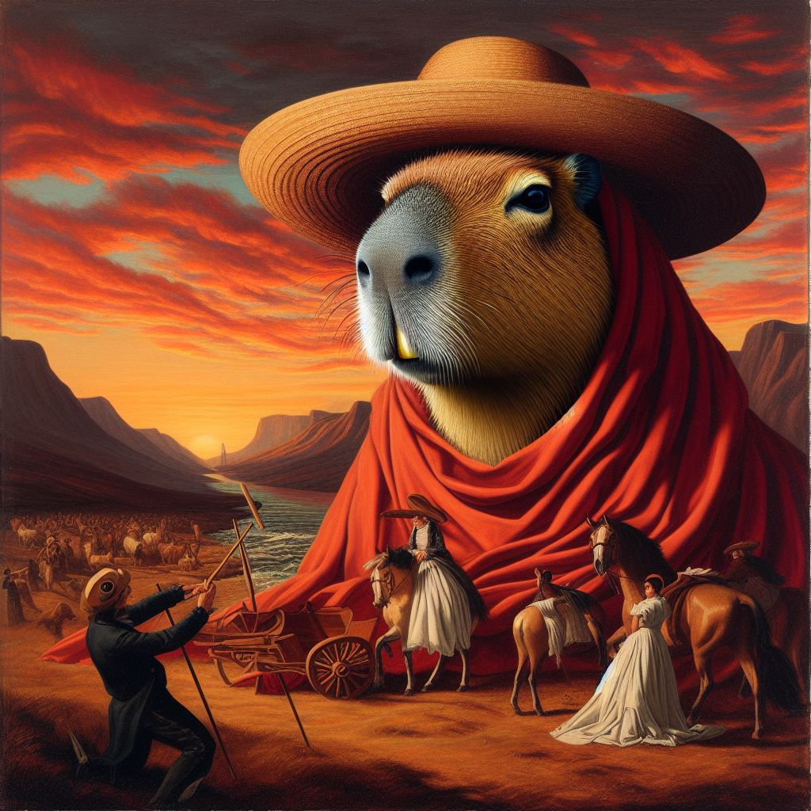

Los capibara vaqueros
¿Qué son los capibaras vaqueros?
Pues los capibaras son animales muy lindos, bonitos y gorditos

Pros de los capibara vaqueros
- muy facheros
- bastantete gorditos
- nivel de poder alto
- suelen ser capibaras demasiado good
- son muy bonitos